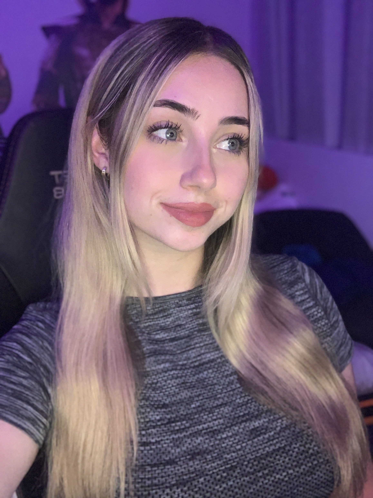

Hi my name is Chloe and I'm a self taught Software Developer student.
I've been in the work force since 2018 in retail, and since 2022 in Media and Content Production by my own Twitch & Youtube channels.
I've attended TAFE a number of times always in IT fields and have decided to commit myself to full time studying with the help of professional software engineering mentors, bootcamps, udemy and crash courses.
Through my time in IT studying i've learnt a little C# and Python, these days im focussing on Javascript and Typescript for my educational needs.
